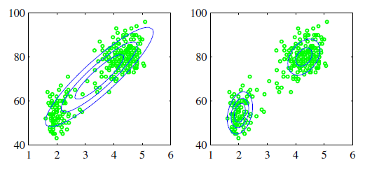
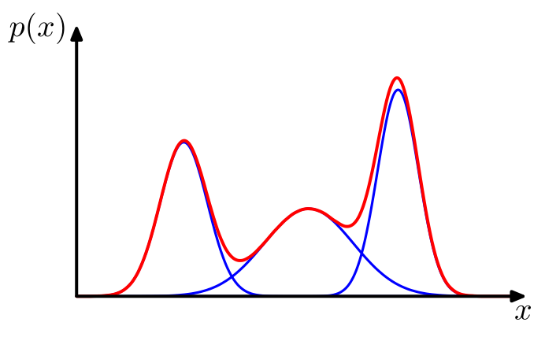
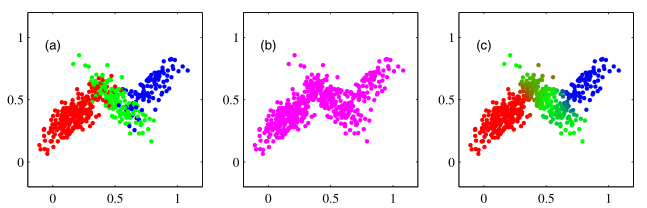
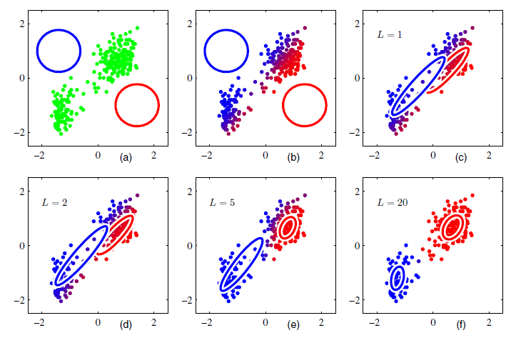

3 Gaussian Mixture Models & EM
Slides for this chapter: 📄
In the previous chapter we saw the \(k\)-means algorithm which is considered as a hard clustering technique, such that each point is allocated to only one cluster. In \(k\)-means, a cluster is described only by its centroid. This is not too flexible, as we may have problems with clusters that are overlapping, or ones that are not of circular shape.
In this chapter, we will introduce a model-based clustering technique, which is Expectation Maximization (EM). We will apply it using Gaussian Mixture Models (GMM).
With EM Clustering, we can go a step further and describe each cluster by its centroid (mean), covariance (so that we can have elliptical clusters), and weight (the size of the cluster). The probability that a point belongs to a cluster is now given by a multivariate Gaussian probability distribution (multivariate - depending on multiple variables). That also means that we can calculate the probability of a point being under a Gaussian ‘bell’, i.e. the probability of a point belonging to a cluster. A comparison between the performances of \(k\)-means and EM clustering on an artificial dataset is shown in Figure 3.1.
We start this chapter by reminding what is a Gaussian distribution, then introduce the Mixture of Gaussians and finish by explaining the Expectation-Maximization algorithm.
3.1 The Gaussian distribution
The Gaussian, also known as the normal distribution, is a widely used model for the distribution of continuous variables. In the case of a single variable \(x\), the Gaussian distribution can be written in the form
\[ \mathcal{N}(x|m,\sigma^2)=\frac{1}{(2 \pi \sigma^2 )^{1/2}} \exp \left\lbrace - \frac{1}{2 \sigma^2} (x-m)^2\right\rbrace \tag{3.1}\]
where \(m\) is the mean and \(\sigma^2\) is the variance.
For a \(D\)-dimensional vector \(X\), the multivariate Gaussian distribution take the form
\[ \mathcal{N}(X|\mu,\Sigma)=\frac{1}{(2 \pi)^{D/2}} \frac{1}{|\Sigma|^{1/2}} \exp \left\lbrace - \frac{1}{2} (X-\mu)^T \Sigma^{-1} (X-\mu) \right\rbrace \tag{3.2}\]
where \(\mu\) is a \(D\)-dimensional mean vector, \(\Sigma\) is a \(D\times D\) covariance matrix, and \(|\Sigma|\) denotes the determinant of \(\Sigma\).
The Gaussian distribution arises in many different contexts and can be motivated from a variety of different perspectives. For example, when we consider the sum of multiple random variables. The central limit theorem (due to Laplace) tells us that, subject to certain mild conditions, the sum of a set of random variables, which is of course itself a random variable, has a distribution that becomes increasingly Gaussian as the number of terms in the sum increases.
3.2 Mixture of Gaussians
While the Gaussian distribution has some important analytical properties, it suffers from significant limitations when it comes to modeling real data sets. Consider the example shown in Figure 3.2 applied on the ’Old Faithful’ data set, this data set comprises 272 measurements of the eruption of the Old Faithful geyser at Yellowstone National Park in the USA. Each measurement comprises the duration of the eruption in minutes (horizontal axis) and the time in minutes to the next eruption (vertical axis). We see that the data set forms two dominant clumps, and that a simple Gaussian distribution is unable to capture this structure, whereas a linear superposition of two Gaussians gives a better characterization of the data set. Such superpositions, formed by taking linear combinations of more basic distributions such as Gaussians, can be formulated as probabilistic models known as mixture distributions.

In Figure 3.3 we see that a linear combination of Gaussians can give rise to very complex densities. By using a sufficient number of Gaussians, and by adjusting their means and covariances as well as the coefficients in the linear combination, almost any continuous density can be approximated to arbitrary accuracy.

We therefore consider a superposition of \(K\) Gaussian densities of the form
\[p(x)= \sum_{k=1}^{K} \pi_k \mathcal{N}(x| \mu_k, \Sigma_k) \tag{3.3}\]
which is called a mixture of Gaussians. Each Gaussian density \(\mathcal{N}(x| \mu_k, \Sigma_k)\) is called a component of the mixture and has its own mean \(\mu_k\) and covariance \(\Sigma_k\).
The parameters \(\pi_k\) are called mixing coefficients. They verify the conditions \[\sum_{k=1}^{K} \pi_k = 1 \quad \text{and} \quad 0 \leq \pi_k \leq 1\]
In order to find an equivalent formulation of the Gaussian mixture involving an explicit latent variable, we introduce a \(K\)-dimensional binary random variable \(z\) having a 1-of-\(K\) representation in which a particular element \(z_k\) is equal to 1 and all other elements are equal to 0. The values of \(z_k\) therefore satisfy \(z_k \in \{0,1\}\) and \(\sum_k z_k =1\), and we see that there are \(K\) possible states for the vector \(z\) according to which element is nonzero. The marginal distribution over \(z\) is specified in terms of the mixing coefficients \(\pi_k\) , such that \[p(z_k=1)=\pi_k\]
A latent variable is a variable that is not directly measurable, but its value can be inferred by taking other measurements.
This happens a lot in machine learning, robotics, statistics and other fields. For example, you may not be able to directly quantify intelligence (it’s not a countable thing like the number of brain cells you have), but we think it exists and we can run experiments that may tell us about intelligence. So your intelligence is a latent variable that affects your performance on multiple tasks even though it can not be directly measured (link).
The conditional distribution of \(x\) given a particular value for \(z\) is a Gaussian
\[p(x|z_k=1)= \mathcal{N}(x| \mu_k, \Sigma_k)\]
The joint distribution is given by \(p(z)p(x|z)\), and the marginal distribution of \(x\) is then obtained by summing the joint distribution over all possible states of \(z\) to give
\[p(x)= \sum_z p(z)p(x|z) = \sum_{k=1}^{K} \pi_k \mathcal{N}(x| \mu_k, \Sigma_k)\]
Now, we are able to work with the joint distribution \(p(x|z)\) instead of the marginal distribution \(p(x)\). This leads to significant simplification, most notably through the introduction of the Expectation-Maximization (EM) algorithm.
Another quantity that play an important role is the conditional probability of \(z\) given \(x\). We shall use \(r(z_k)\) to denote \(p(z_k = 1|x)\), whose value can be found using Bayes’ theorem
\[ \begin{align} r(z_k)= p(z_k = 1|x) &= \frac{ p(z_k = 1) p(x|z_k=1)}{\displaystyle \sum_{j=1}^{K} p(z_j = 1) p(x|z_j=1)} \notag \\ &= \frac{\pi_k \mathcal{N}(x| \mu_k, \Sigma_k)}{\displaystyle \sum_{j=1}^{K} \pi_j \mathcal{N}(x| \mu_j, \Sigma_j)} \end{align} \tag{3.4}\]
We shall view \(\pi_k\) as the prior probability of \(z_k = 1\), and the quantity \(r(z_k)\) as the corresponding posterior probability once we have observed \(x\). As we shall see in next section, \(r(z_k)\) can also be viewed as the responsibility that component \(k\) takes for ’explaining’ the observation \(x\).
Doesn’t this reminds you of the Equation (1.1) when we used Bayes’ theorm for Classification? where \(p_k(x)\) was the posterior probability that an observation \(X=x\) belongs to \(k\)-th class. The difference is that here the data is unlabled (we have no class), so we create a latent (hidden, unobserved) variable \(z\) that will play a similar role.
In Figure 3.4 the role of the responsibilities is illustrated on a sample of 500 points drawn from a mixture of three Gaussians.

So the form of the Gaussian mixture distribution is governed by the parameters \(\pi\), \(\mu\) and \(\Sigma\), where we have used the notation \(\pi=\{\pi_1,\ldots,\pi_K\}\), \(\mu=\{\mu_1,\ldots,\mu_K\}\) and \(\Sigma=\{\Sigma_1,\ldots,\Sigma_K\}\). One way to set the values of these parameters is to use maximum likelihood. The log of the likelihood function is given by
\[\ln p(X|\pi,\mu,\Sigma)=\sum_{n=1}^{N} \ln \left\lbrace \sum_{k=1}^{K} \pi_k \mathcal{N}(x_n | \mu_k, \Sigma_k) \right\rbrace\]
We immediately see that the situation is now much more complex than with a single Gaussian, due to the presence of the summation over \(k\) inside the logarithm. As a result, the maximum likelihood solution for the parameters no longer has a closed-form analytical solution. One approach to maximizing the likelihood function is to use iterative numerical optimization techniques. Alternatively we can employ a powerful framework called Expectation Maximization, which will be discussed in this chapter.
3.3 EM for Gaussian Mixtures
Suppose we have a data set of observations \(\{x_1, \ldots, x_N\}\), which gives a data set \(X\) of size \(N \times D\), and we wish to model this data using a mixture of Gaussians. Similarly, the corresponding latent variable are denoted by a \(N \times K\) matrix \(Z\) with rows \(z_n^K\).
Recall that the objective is to estimate the parameters \(\pi\), \(\mu\) and \(\Sigma\) in order to estimate the posterior probabilities (named also responsibilities, called \(\, r(z_k)\) in this chapter). To do so, we find the estimators that maximize the log of the likelihood function.
If we assume that the data points are i.i.d. (independent and identically distributed), then we can calculate the log of the likelihood function, which is given by
\[\ln p(X|\pi,\mu,\Sigma)=\sum_{n=1}^{N} \ln \left\lbrace \sum_{k=1}^{K} \pi_k \mathcal{N}(x_n | \mu_k, \Sigma_k) \right\rbrace \tag{3.5}\]
An elegant and powerful method for finding maximum likelihood solutions for this models with latent variables is called the Expectation Maximization algorithm, or EM algorithm.
Setting the derivatives of \(\ln p(X|\pi,\mu,\Sigma)\) in (3.5) respectively with respect to the \(\mu_k,\Sigma_k\) and \(\pi_k\) to zero, we obtain
\[\mu_k = \frac{1}{N_k} \sum_{n=1}^{N} r(z_{nk}) x_n \tag{3.6}\]
where we define \[N_k= \sum_{n=1}^{N}r(z_{nk})\]
We can interpret \(N_k\) as the effective number of points assigned to cluster \(k\). Note carefully the form of this solution. We see that the mean \(\mu_k\) for the \(k\)-th Gaussian component is obtained by taking a weighted mean of all of the points in the data set, in which the weighting factor for data point \(x_n\) is given by the posterior probability \(r(z_{nk})\) that component \(k\) was responsible for generating \(x_n\).
As for \(\sigma_k\) we obtain
\[\Sigma_k= \frac{1}{N_k} \sum_{n=1}^{N} r(z_{nk}) (x_n - \mu_k)(x_n - \mu_k)^T \tag{3.7}\]
which has the same form as the corresponding result for a single Gaussian fitted to the data set, but again with each data point weighted by the corresponding posterior probability and with the denominator given by the effective number of points associated with the corresponding component.
Finally, for the mixing coefficients \(\pi_k\) we obtain
\[ \pi_k=\frac{N_k}{N} \tag{3.8}\]
so that the mixing coefficient for the \(k\)-th component is given by the average responsibility which that component takes for explaining the data points.
We first choose some initial values for the means, covariances, and mixing coefficients. Then we alternate between the following two updates that we shall call the E step and the M step. In the expectation step, or E step, we use the current values for the parameters to evaluate the posterior probabilities, or responsibilities, given by (3.4). We then use these probabilities in the maximization step, or M step, to re-estimate the means, covariances, and mixing coefficients using the results in Equations (3.6), (3.7) and (3.8). The algorithm of EM for mixtures of Gaussians is shown in the following Algorithm:
The EM algorithm for a mixture of two Gaussians applied to the rescaled Old Faithful data set is illustrated in Figure 3.5. In plot (a) we see the initial configuration, the Gaussian component are shown as blue and red circles. Plot (b) shows the result of the initial E step where we update the responsibilities. Plot (c) shows the M step where we update the parameters. Plots (d), (e), and (f) show the results after 2, 5, and 20 complete cycles of EM, respectively. In plot (f) the algorithm is close to convergence.

Summary of this chapter:
- Gaussian Mixture Models (GMM) take a Gaussian and add another Gaussian(s).
- This allows to model more complex data.
- We fit a GMM with the Expectation-Maximization (EM) algorithm.
- Expectation-Maximization (EM) algorithm is a series of steps to find good parameter estimates when there are latent variables.
- EM steps:
- Initialize the parameter estimates.
- Given the current parameter estimates, find the minimum log likelihood for \(Z\) (data + latent variables).
- Givent the current data, find better parameter estimates.
- Repeat steps 2 & 3.
◼